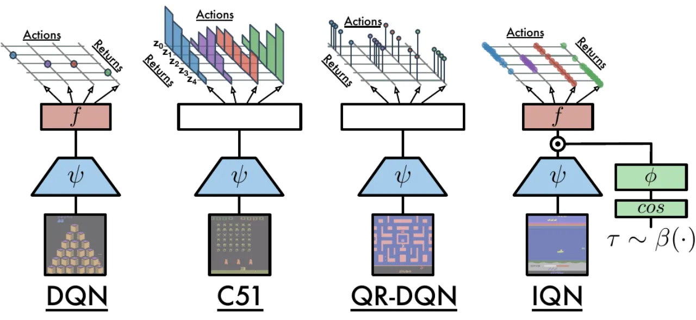
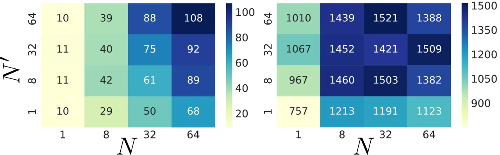
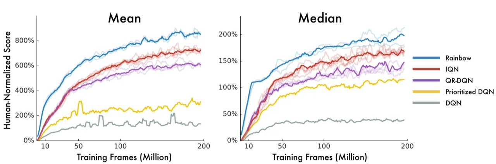
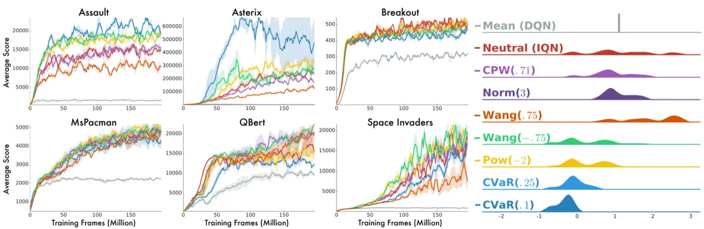

IQN 将 QR-DQN 的"固定 N 个分位点"推广为"连续量化函数"：网络以状态、动作和随机采样的分位数水平 τ 为输入，输出对应的回报分位值，从而隐式地表示完整的回报分布。这一改变消除了分位点数量对近似误差的上限约束，并天然地支持基于 distortion risk measure 的风险敏感策略。
分布强化学习（Distributional RL）将关注点从标量值函数 Q(x,a) 转向完整的回报分布 Z(x,a)，已被证明能显著提升数据效率、最终性能和稳定性。然而，现有算法在参数化方式上存在根本限制：
将回报分布参数化为固定区间上的 categorical 分布，要求预先知道回报的上下界，且固定离散点集牺牲了均值保持性。
通过 quantile regression 将分布参数化为 N 个固定分位点处的 Dirac 混合。尽管无需指定回报范围，但近似误差的上限仍受 N 控制，且分位点为静态固定集合，无法表示完整连续分布。
"In this paper, we extend the approach of [QR-DQN], from learning a discrete set of quantiles to learning the full quantile function, a continuous map from probabilities to returns."
IQN 的核心思路是用神经网络 隐式 地表示量化函数（quantile function）：网络接受任意 τ ∈ [0,1] 作为输入并输出对应分位值，从而一举解决"固定分位点数量限制近似精度"和"无法支持任意风险偏好策略"两个问题。
IQN 将 DQN 的标量 Q 网络替换为一个接受 (状态 x, 动作 a, 分位数水平 τ) 三元输入的量化函数近似器，输出分位值 Z_τ(x,a)。结合任意基础分布（如 U([0,1])）即可在推断时对回报分布进行任意粒度的采样。

设 Z_τ(x,a) := F⁻¹_{Z(x,a)}(τ) 为回报分布在分位数 τ 处的逆 CDF 值。IQN 通过以下网络结构近似该量化函数：
Z_τ(x, a) ≈ f(ψ(x) ⊙ φ(τ))_a
其中：
作者最终采用的 τ 嵌入公式（embedding dimension n = 64）为：
φ_j(τ) := ReLU(Σ_{i=0}^{n-1} cos(πiτ) · w_{ij} + b_j)
即对 τ 计算余弦基函数特征后经线性变换和 ReLU 激活。消融实验表明，多种架构变体（MLP embedding、concatenation、residual fusion 等）均能稳定超过 QR-DQN 基线，整体对超参数选择鲁棒。
训练时从 U([0,1]) 中分别采样 N 个 τ 和 N' 个 τ'，对所有 N×N' 对 TD 误差计算 Huber quantile regression loss：
L(x_t, a_t, r_t, x_{t+1}) = (1/N') Σ_{i=1}^{N} Σ_{j=1}^{N'} ρ^κ_{τ_i}(δ_t^{τ_i, τ_j'})
其中 δ_t^{τ,τ'} = r_t + γ Z_{τ'}(x_{t+1}, π_β(x_{t+1})) − Z_τ(x_t, a_t) 为采样 TD 误差，ρ^κ_τ 为 Huber 分位数损失。
IQN 的隐式分布表示天然支持 distortion risk measure：给定连续单调函数 β:[0,1]→[0,1]（称为 distortion risk measure），只需将策略中 τ 的采样分布从 U([0,1]) 替换为 β 变换后的分布即可实现风险偏好调整：
π_β(x) = argmax_{a} E_{τ~U([0,1])} [Z_{β(τ)}(x, a)]
论文考察了四种 distortion risk measure：CPW（cumulative prospect theory 中的概率权重函数，η=0.71 最接近人类行为）、Wang、Pow 和 CVaR，涵盖风险厌恶和风险追求两类策略。

主实验在 Atari-57 基准（ALE，57 款 Atari 2600 游戏）上进行，采用 30 no-op starts 和 human-starts 两种评估协议，报告人类归一化均值和中位数。IQN 均值平均 5 个随机种子。
| 算法 | Mean (%) | Median (%) | Human-Gap | Seeds |
|---|---|---|---|---|
| DQN | 228% | 79% | 0.334 | 1 |
| Prioritized DQN | 434% | 124% | 0.178 | 1 |
| C51 | 701% | 178% | 0.152 | 1 |
| QR-DQN | 864% | 193% | 0.165 | 3 |
| Rainbow | 1189% | 230% | 0.144 | 2 |
| IQN（本文） | 1019% | 218% | 0.141 | 5 |
IQN 在均值和中位数上均大幅超过 QR-DQN，在 100M 帧处即达到 QR-DQN 200M 帧的性能水平。Rainbow 综合了 C51、prioritized replay、Double DQN、Dueling、Noisy Nets 和 n-step 等多项改进，IQN 在不引入任何额外技术的情况下，将 QR-DQN 与 Rainbow 之间差距缩小约一半。在 human-gap 指标（智能体在仍不如人类的游戏上平均差距）上，IQN 以 0.141 超过所有算法（含 Rainbow 的 0.144）。
| DQN | Prioritized | A3C | C51 | Rainbow | IQN |
|---|---|---|---|---|---|
| 68% | 128% | 116% | 125% | 153% | 162% |
在 human-starts 协议下，IQN 中位数人类归一化分数为 162%，而 Rainbow 为 153%，IQN 在这一最难条件下（最接近真实人类起点）取得更好表现。


下表摘自原文 Table 3（30 no-op starts，单种子原始分数），IQN 与 QR-DQN 的典型差距：
| Game | DQN | QR-DQN | IQN |
|---|---|---|---|
| James Bond | 768.5 | 4,703 | 35,108 |
| Seaquest | 5,860.6 | 8,268 | 30,140 |
| Venture | 163.0 | 43.9 | 1,318 |
| Assault | 4,280.4 | 22,012 | 29,091 |
| Q*Bert | 13,117.3 | 572,510 | 25,750 |
| Asteroids | 1,364.5 | 4,226 | 2,898 |
IQN 在绝大多数游戏上领先或持平 QR-DQN，少数游戏（如 Q*Bert、Asteroids）QR-DQN 更优——论文未隐藏这些不利数字，原文完整 57 游戏数据均已公开。
对 N, N' ∈ {1, 8, 32, 64} 共 16 种配置在六款游戏上评估：N 对前期性能影响显著，持续增大可加速学习；N' 对长期性能影响在超过 8 后趋于饱和。论文建议："N = N' = 8 appears to be sufficient to achieve the majority of improvements offered by IQN for long-term performance."
论文明确指出三个未解决的理论问题：（1）QR-DQN 的固定分位网格下已有收缩映射结果，能否推广到 IQN 的近似量化函数类？（2）分类分布算法已有基于样本的收敛证明，能否推广到基于分位回归的算法？（3）风险敏感策略下分布 Bellman 算子的收敛性能否建立？作者原文："Despite the significant empirical successes in this paper there are many areas in need of additional theoretical analysis."
IQN 仅是对 DQN 的分布扩展，未引入 prioritized replay、n-step updates、Dueling 架构、Noisy Nets 等 Rainbow 中的正交增强。作者明确指出 IQN 与 Rainbow 的差距完全来自这些缺失组件，并预期 "Creating a Rainbow-IQN agent could yield even greater improvements on Atari-57"，但该组合在本文中未被评估。
在六款 Atari 游戏的风险敏感实验中，作者坦承："Intuitively, we expected to see a qualitative effect from risk-sensitive training, e.g. strengthened exploration from a risk-seeking objective. Although we did see qualitative differences, these did not always match our expectations." 风险追求策略在多数游戏上表现更差，而风险厌恶策略在部分游戏中意外提升性能——背后机制仍是开放问题。
IQN 每次更新需对 N×N' 对 TD 误差计算损失，且需为每个 τ 单独计算 embedding 并前向传播，单样本计算量高于 QR-DQN。论文提到 "IQN will generally be more computationally expensive per-sample than QR-DQN"，但指出 IQN 所需每次更新的样本数更少，实际运行时间相当。在资源受限环境下，这一权衡仍需考量。